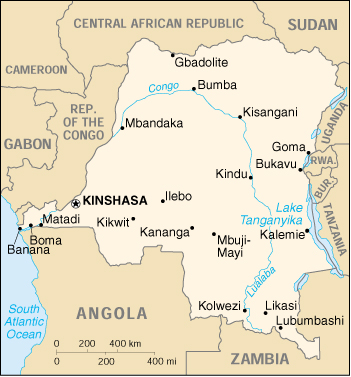

![[Country Flag of Congo, Democratic Republic of the]](../flags/cg-lgflag.jpg)
| Congo, Democratic Republic of the |
|
         |  | |
| Introduction |
Background: Since 1994 the Democratic Republic of the Congo (DROC; formerly called Zaire) has been rent by ethnic strife and civil war, touched off by a massive inflow of refugees from the fighting in Rwanda and Burundi. Troops from Uganda, Rwanda, Zimbabwe, Angola, and Namibia have intervened in this devastating conflict. A cease-fire was signed on 10 July 1999, but skirmishing continues.
| Geography |
Location: Central Africa, northeast of Angola
Geographic coordinates: 0 00 N, 25 00 E
Map references: Africa
Area:
total:
2,345,410 sq km
land:
2,267,600 sq km
water:
77,810 sq km
Area - comparative: slightly less than one-fourth the size of the US
Land boundaries:
total:
10,744 km
border countries:
Angola 2,511 km, Burundi 233 km, Central African Republic 1,577 km, Republic of the Congo 2,410 km, Rwanda 217 km, Sudan 628 km, Tanzania 473 km, Uganda 765 km, Zambia 1,930 km
Coastline: 37 km
Maritime claims:
exclusive economic zone:
boundaries with neighbors
territorial sea:
12 nm
Climate: tropical; hot and humid in equatorial river basin; cooler and drier in southern highlands; cooler and wetter in eastern highlands; north of Equator - wet season April to October, dry season December to February; south of Equator - wet season November to March, dry season April to October
Terrain: vast central basin is a low-lying plateau; mountains in east
Elevation extremes:
lowest point:
Atlantic Ocean 0 m
highest point:
Pic Marguerite on Mont Ngaliema (Mount Stanley) 5,110 m
Natural resources: cobalt, copper, cadmium, petroleum, industrial and gem diamonds, gold, silver, zinc, manganese, tin, germanium, uranium, radium, bauxite, iron ore, coal, hydropower, timber
Land use:
arable land:
3%
permanent crops:
0%
permanent pastures:
7%
forests and woodland:
77%
other:
13% (1993 est.)
Irrigated land: 100 sq km (1993 est.)
Natural hazards: periodic droughts in south; volcanic activity
Environment - current issues: poaching threatens wildlife populations; water pollution; deforestation; refugees who arrived in mid-1994 were responsible for significant deforestation, soil erosion, and wildlife poaching in the eastern part of the country (most of those refugees were repatriated in November and December 1996)
Environment - international agreements:
party to:
Biodiversity, Climate Change, Desertification, Endangered Species, Hazardous Wastes, Law of the Sea, Marine Dumping, Nuclear Test Ban, Ozone Layer Protection, Tropical Timber 83, Tropical Timber 94, Wetlands
signed, but not ratified:
Environmental Modification
Geography - note: straddles Equator; very narrow strip of land that controls the lower Congo river and is only outlet to South Atlantic Ocean; dense tropical rain forest in central river basin and eastern highlands
| People |
Population:
51,964,999
note:
estimates for this country explicitly take into account the effects of excess mortality due to AIDS; this can result in lower life expectancy, higher infant mortality and death rates, lower population and growth rates, and changes in the distribution of population by age and sex than would otherwise be expected (July 2000 est.)
Age structure:
0-14 years:
48% (male 12,597,444; female 12,490,279)
15-64 years:
49% (male 12,503,440; female 13,037,527)
65 years and over:
3% (male 567,823; female 768,486) (2000 est.)
Population growth rate: 3.19% (2000 est.)
Birth rate: 46.44 births/1,000 population (2000 est.)
Death rate: 15.38 deaths/1,000 population (2000 est.)
Net migration rate:
0.82 migrant(s)/1,000 population (2000 est.)
note:
in 1994, about a million refugees fled into Zaire (now called the Democratic Republic of the Congo or DROC), to escape the fighting between the Hutus and the Tutsis in Rwanda and Burundi; the outbreak of widespread fighting in the DROC between rebels and government forces in October 1996 spurred about 875,000 refugees to return to Rwanda in late 1996 and early 1997; an additional 173,000 Rwandan refugees disappeared in early 1997 and are assumed to have been killed by DROC forces; fighting renewed in August 1998 and has continued sporadically into 2000 resulting in further internal displacement and refugee movements within the Great Lakes region
Sex ratio:
at birth:
1.03 male(s)/female
under 15 years:
1.01 male(s)/female
15-64 years:
0.96 male(s)/female
65 years and over:
0.74 male(s)/female
total population:
0.98 male(s)/female (2000 est.)
Infant mortality rate: 101.71 deaths/1,000 live births (2000 est.)
Life expectancy at birth:
total population:
48.75 years
male:
46.72 years
female:
50.83 years (2000 est.)
Total fertility rate: 6.92 children born/woman (2000 est.)
Nationality:
noun:
Congolese (singular and plural)
adjective:
Congolese or Congo
Ethnic groups: over 200 African ethnic groups of which the majority are Bantu; the four largest tribes - Mongo, Luba, Kongo (all Bantu), and the Mangbetu-Azande (Hamitic) make up about 45% of the population
Religions: Roman Catholic 50%, Protestant 20%, Kimbanguist 10%, Muslim 10%, other syncretic sects and indigenous beliefs 10%
Languages: French (official), Lingala (a lingua franca trade language), Kingwana (a dialect of Kiswahili or Swahili), Kikongo, Tshiluba
Literacy:
definition:
age 15 and over can read and write French, Lingala, Kingwana, or Tshiluba
total population:
77.3%
male:
86.6%
female:
67.7% (1995 est.)
| Government |
Country name:
conventional long form:
Democratic Republic of the Congo
conventional short form:
none
local long form:
Republique Democratique du Congo
local short form:
none
former:
Belgian Congo, Congo/Leopoldville, Congo/Kinshasa, Zaire
abbreviation:
DROC
Data code: CG
Government type: dictatorship; presumably undergoing a transition to representative government
Capital: Kinshasa
Administrative divisions: 10 provinces (provinces, singular - province) and one city* (ville); Bandundu, Bas-Congo, Equateur, Kasai-Occidental, Kasai-Oriental, Katanga, Kinshasa*, Maniema, Nord-Kivu, Orientale, Sud-Kivu
Independence: 30 June 1960 (from Belgium)
National holiday: anniversary of independence from Belgium, 30 June (1960)
Constitution: 24 June 1967, amended August 1974, revised 15 February 1978, amended April 1990; transitional constitution promulgated in April 1994; following successful rebellion the new government announced on 29 May 1997 a program of constitutional reform and, in November 1998, a draft constitution was approved by President KABILA and awaits ratification by national referendum
Legal system: based on Belgian civil law system and tribal law; has not accepted compulsory ICJ jurisdiction
Suffrage: 18 years of age; universal and compulsory
Executive branch:
chief of state:
Laurent Desire KABILA (since 17 May 1997); note - the president is both chief of state and head of government
head of government:
Laurent Desire KABILA (since 17 May 1997); note - the president is both chief of state and head of government
cabinet:
National Executive Council, appointed by the president
elections:
before Laurent Desire KABILA seized power, the president was elected by popular vote for a seven-year term; election last held 29 July 1984 (next was scheduled to be held in May 1997); formerly, the prime minister was elected by the High Council of the Republic; note - the term of the former government expired in 1991, elections were not held, and former President MOBUTU continued in office until his government was militarily defeated by KABILA on 17 May 1997
election results:
results of the last election before the coup were: MOBUTU Sese Seko Kuku Ngbendu wa Za Banga reelected president in 1984 without opposition
note:
Marshal MOBUTU Sese Seko Kuku Ngbendu wa Za Banga was president from 24 November 1965 until forced into exile on 16 May 1997 when his government was overthrown militarily by Laurent Desire KABILA, who immediately assumed governing authority; in his 29 May 1997 inaugural address, President KABILA announced a two-year time table for political reform leading to elections by April 1999; subsequently, in December 1998, President KABILA announced that elections would be postponed until all foreign military forces attempting his overthrow had withdrawn from the country
Legislative branch:
legislative activity has been suspended pending the establishment of KABILA's promised constitutional reforms and the elections to be held by April 1999 (now postponed indefinitely)
elections:
the country's first multi-party presidential and legislative elections had been scheduled for May 1997 but were not held; instead KABILA overthrew the MOBUTU government and seized control of the country
Judicial branch: Supreme Court (Cour Supreme)
Political parties and leaders:
sole legal party until January 1991 - Popular Movement of the Revolution or MPR [Catherine NZUZI]; other parties include Democratic Social Christian Party or PDSC [Andre BO-BOLIKO]; Unified Lumumbast Party or PALU [Antoine GIZENGA]; Union for Democracy and Social Progress or UDPS [Etienne TSHISEKEDI wa Mulumba]; Union of Federalists and Independent Republicans or UFERI [Maitre LUKAMBA Michel]
note:
President KABILA, who lifted an 18-month ban on political party activity in January 1999, dissolved his Alliance of Democratic Forces for the Liberation of Congo-Zaire or AFDL just before his government's self-imposed two-year mandate expired; he then created People's Power Committees
International organization participation: ACCT, ACP, AfDB, CCC, CEEAC, CEPGL, ECA, FAO, G-19, G-24, G-77, IAEA, IBRD, ICAO, ICFTU, ICRM, IDA, IFAD, IFC, IFRCS, IHO, ILO, IMF, IMO, Intelsat, Interpol, IOC, IOM (observer), ISO (subscriber), ITU, NAM, OAU, OPCW, PCA, SADC, UN, UNCTAD, UNESCO, UNHCR, UNIDO, UPU, WCL, WFTU, WHO, WIPO, WMO, WToO, WTrO
Diplomatic representation in the US:
chief of mission:
Ambassador Faida MITIFU
chancery:
1800 New Hampshire Avenue NW, Washington, DC 20009
telephone:
[1] (202) 234-7690, 7691
FAX:
[1] (202) 237-0748
Diplomatic representation from the US:
chief of mission:
Ambassador William Lacy SWING
embassy:
310 Avenue des Aviateurs, Kinshasa
mailing address:
Unit 31550, APO AE 09828
telephone:
[243] (12) 21028, 21959
FAX:
[243] (88) 43805 43467
Flag description: light blue with a large yellow five-pointed star in the center and a columnar arrangement of six small yellow five-pointed stars along the hoist side
| Economy |
Economy - overview: The economy of the Democratic Republic of the Congo - a nation endowed with vast potential wealth - has declined drastically since the mid-1980s. The new government instituted a tight fiscal policy that initially curbed inflation and currency depreciation, but these small gains were quickly reversed when the foreign-backed rebellion in the eastern part of the country began in August 1998. The war has dramatically reduced government revenue, and increased external debt. Foreign businesses have curtailed operations due to uncertainty about the outcome of the conflict and because of increased government harassment and restrictions. Poor infrastructure, an uncertain legal framework, corruption, and lack of openness in government economic policy and financial operations remain a brake on investment and growth. A number of IMF and World Bank missions have met with the new government to help it develop a coherent economic plan but associated reforms are on hold. Assuming moderate peace, annual growth is likely to increase to nearly 5% in 2000-01, but inflation will continue to be a problem.
GDP: purchasing power parity - $35.7 billion (1999 est.)
GDP - real growth rate: 1% (1999 est.)
GDP - per capita: purchasing power parity - $710 (1999 est.)
GDP - composition by sector:
agriculture:
58%
industry:
17%
services:
25% (1997 est.)
Population below poverty line: NA%
Household income or consumption by percentage share:
lowest 10%:
NA%
highest 10%:
NA%
Inflation rate (consumer prices): 46% (1999 est.)
Labor force: 14.51 million (1993 est.)
Labor force - by occupation: agriculture 65%, industry 16%, services 19% (1991 est.)
Unemployment rate: NA%
Budget:
revenues:
$269 million
expenditures:
$244 million, including capital expenditures of $24 million (1996 est.)
Industries: mining, mineral processing, consumer products (including textiles, footwear, cigarettes, processed foods and beverages), cement, diamonds
Industrial production growth rate: NA%
Electricity - production: 5.74 billion kWh (1998)
Electricity - production by source:
fossil fuel:
2.61%
hydro:
97.39%
nuclear:
0%
other:
0% (1998)
Electricity - consumption: 5.488 billion kWh (1998)
Electricity - exports: 150 million kWh (1998)
Electricity - imports: 300 million kWh (1998)
Agriculture - products: coffee, sugar, palm oil, rubber, tea, quinine, cassava (tapioca), palm oil, bananas, root crops, corn, fruits; wood products
Exports: $530 million (f.o.b., 1998 est.)
Exports - commodities: diamonds, copper, coffee, cobalt, crude oil
Exports - partners: Benelux 52%, US 14%, South Africa 9%, Finland 4% (1998)
Imports: $460 million (f.o.b., 1998 est.)
Imports - commodities: foodstuffs, mining and other machinery, transport equipment, fuels
Imports - partners: South Africa 25%, Benelux 14%, Nigeria 7%, Kenya 5%, China (1998)
Debt - external: $12.3 billion (1997 est.)
Economic aid - recipient: $195.3 million (1995)
Currency: Congolese franc (CF)
Exchange rates:
Congolese francs (CF) per US$1 - 4.5 (January 2000), 2.5 (January 1999); new zaires (Z) per US$1 - 115,000 (January 1998), 83,764 (October 1996), 7,024 (1995), 1,194 (1994)
note:
on 30 June 1998 the Congolese franc (CF) was introduced, replacing the new zaire; 1 Congolese franc (CF) = 100,000 new zaires
Fiscal year: calendar year
| Communications |
Telephones - main lines in use: 36,000 (1995)
Telephones - mobile cellular: 10,000 (1995)
Telephone system:
domestic:
barely adequate wire and microwave radio relay service in and between urban areas; domestic satellite system with 14 earth stations
international:
satellite earth station - 1 Intelsat (Atlantic Ocean)
Radio broadcast stations: AM 3, FM 12, shortwave 1 (1999)
Radios: 18.03 million (1997)
Television broadcast stations: 20 (1999)
Televisions: 6.478 million (1997)
Internet Service Providers (ISPs): 1 (1999)
| Transportation |
Railways:
total:
5,138 km (1995); note - severely reduced route-distance in use because of damage to facilities by civil strife
narrow gauge:
3,987 km 1.067-m gauge (858 km electrified); 125 km 1.000-m gauge; 1,026 km 0.600-m gauge
Highways:
total:
157,000 km
paved:
NA km (including 30 km of expressways)
unpaved:
NA km (1996 est.)
Waterways: 15,000 km including the Congo, its tributaries, and unconnected lakes
Pipelines: petroleum products 390 km
Ports and harbors: Banana, Boma, Bukavu, Bumba, Goma, Kalemie, Kindu, Kinshasa, Kisangani, Matadi, Mbandaka
Merchant marine: none (1999 est.)
Airports: 232 (1999 est.)
Airports - with paved runways:
total:
24
over 3,047 m:
4
2,438 to 3,047 m:
3
1,524 to 2,437 m:
15
914 to 1,523 m:
2 (1999 est.)
Airports - with unpaved runways:
total:
208
1,524 to 2,437 m:
20
914 to 1,523 m:
96
under 914 m:
92 (1999 est.)
| Military |
Military branches: Army, Navy, Air Force, Presidential Security Group, Gendarmerie
Military manpower - availability:
males age 15-49:
11,218,992 (2000 est.)
Military manpower - fit for military service:
males age 15-49:
5,712,265 (2000 est.)
Military expenditures - dollar figure: $250 million (FY97)
Military expenditures - percent of GDP: 4.6% (FY97)
| Transnational Issues |
Disputes - international: the Democratic Republic of the Congo is in the grip of a civil war that has drawn in military forces from neighboring states, with Uganda and Rwanda supporting the rebel movement which occupies much of the eastern portion of the state; most of the Congo river boundary with the Republic of the Congo is indefinite (no agreement has been reached on the division of the river or its islands, except in the Pool Malebo/Stanley Pool area)
Illicit drugs: illicit producer of cannabis, mostly for domestic consumption